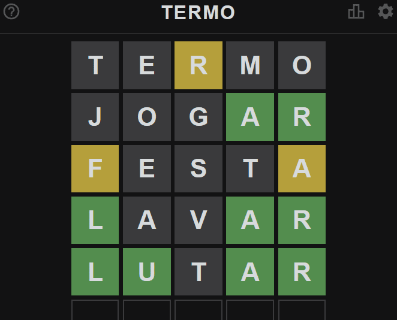

O Termo é um jogo online gratuito de adivinhação de palavras, no estilo "forca", que se tornou popular no Brasil por ser a versão em português do jogo Wordle. O objetivo é descobrir uma palavra secreta de 5 letras em até 6 tentativas, com uma nova palavra sendo disponibilizada a cada 24 horas.